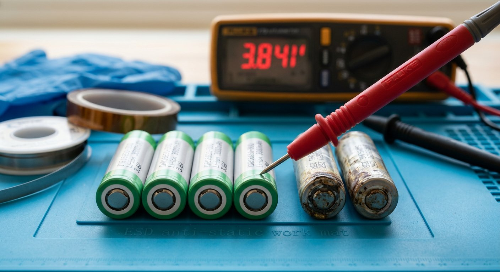

Qué cubre esta guía
- Anatomía de una batería de taladro inalámbrico
- Tipos de química: NiCd, NiMH y Li-ion
- Diagnóstico de fallas comunes
- Herramientas y materiales necesarios
- ¿Celdas, BMS o ambos? Cómo decidir
- Proceso de reparación paso a paso
- Soldadura de celdas: puntos vs estaño
- Balanceo y pruebas del pack reparado
- Seguridad al trabajar con litio
- Costos: reparar vs comprar nueva
- Errores comunes y cómo evitarlos
- Mantenimiento para prolongar la vida útil
- Preguntas frecuentes
Anatomía de una batería de taladro inalámbrico
Bajo la carcasa plástica de cualquier batería de taladro —sea de 12 V, 18 V o 20 V— conviven cuatro elementos que debes aprender a identificar antes de tocar nada:
- Celdas. Unidades cilíndricas (formatos 18650, 21700 o Sub-C según la marca y generación) conectadas en serie y/o paralelo para alcanzar el voltaje y la capacidad nominal del pack. Son el "corazón" energético y, con el tiempo, las que más se degradan.
- BMS / PCB de protección. Una placa electrónica que monitorea voltaje, corriente y temperatura de las celdas, corta la salida ante sobrecarga, sobredescarga o cortocircuito, y en packs más avanzados gestiona el balanceo entre celdas y la comunicación con el cargador (termistor NTC, chip de autenticación en algunas marcas).
- Contactos y conector de la herramienta. Las láminas metálicas que hacen contacto con el taladro y el cargador; se degradan por oxidación, arqueo eléctrico (chispazo al conectar) o suciedad.
- Carcasa y sistema de guías. La estructura plástica que sostiene el pack, incluye las guías mecánicas de acople y, en muchos modelos, un pequeño ventilador o disipador térmico.
Entender esta anatomía cambia el enfoque del problema: en la inmensa mayoría de los casos, no reparas "la batería" como una caja negra, reparas uno de estos cuatro subsistemas, y casi siempre es el de las celdas.
Tipos de química: NiCd, NiMH y Li-ion
| Química | Voltaje/celda | Ventajas | Riesgos al reparar |
|---|---|---|---|
| NiCd (níquel-cadmio) | 1,2 V | Tolera descargas profundas, soporta soldadura de estaño directa con cuidado | Efecto memoria, cadmio tóxico — reciclar, nunca desechar |
| NiMH (níquel-metal hidruro) | 1,2 V | Más capacidad que NiCd, menos tóxico | Autodescarga alta, sensible a sobrecalentamiento durante carga |
| Li-ion (18650/21700, NMC o LFP) | 3,6–3,7 V (LFP: 3,2 V) | Alta densidad energética, sin efecto memoria, packs más livianos | Riesgo de fuga térmica si se daña, perfora o sobrecarga; exige BMS obligatorio |
Antes de comprar cualquier repuesto, abre la carcasa (con la batería descargada si es posible) y confirma la química real: el voltaje nominal impreso en la etiqueta dividido por el número de celdas en serie te lo confirma. Un pack de 18 V con celdas Li-ion normalmente trae 5 celdas en serie (5 × 3,6 V ≈ 18 V); uno de 20 V "máx" del mismo fabricante suele ser el mismo pack de 18 V nominal, medido en su voltaje de carga máxima.
Diagnóstico de fallas comunes
El diagnóstico correcto ahorra dinero y tiempo. Sigue este orden antes de decidir qué reparar:
- Inspección visual. Abre la carcasa (normalmente con tornillos Torx o Phillips de seguridad ocultos bajo las etiquetas). Busca celdas hinchadas (bulto visible), fugas de electrolito, olor dulzón/químico, contactos quemados u oxidados y cables sueltos.
- Voltaje total del pack. Mide con multímetro en los contactos externos. Un pack de 18 V nominal completamente cargado debe marcar entre 20 y 21 V (Li-ion); si marca 0 V, sospecha de BMS abierto en modo de protección permanente o fusible interno cortado.
- Voltaje por celda individual. Con el pack abierto, mide cada celda o grupo en paralelo por separado. Celdas sanas de Li-ion deben estar entre 3,0 V y 4,2 V; cualquier celda por debajo de 2,5 V está degradada y probablemente dañada de forma permanente por sobredescarga.
- Prueba de carga. Conecta al cargador original y observa el patrón de LEDs. Un parpadeo de error (consulta el manual: suele ser rojo intermitente rápido) indica que el BMS rechaza la carga, normalmente por una celda fuera de rango.
- Prueba bajo carga real. Si el pack carga y mide bien en vacío pero el taladro pierde potencia o se apaga bajo esfuerzo, sospecha de una celda con alta resistencia interna: acepta carga pero no sostiene corriente.
| Síntoma | Causa más probable |
|---|---|
| No enciende, 0 V en contactos | BMS en corte por sobredescarga profunda o fusible térmico abierto |
| Carga pero dura poco | Una o más celdas con capacidad degradada o alta resistencia interna |
| Se calienta al cargar o usar | Celda en corto parcial, contactos oxidados o BMS defectuoso |
| Carcasa hinchada o deformada | Celda con fuga térmica en curso — no seguir usando |
| LED de carga parpadea en error | Celda fuera del rango de voltaje aceptado por el BMS |
| Taladro pierde fuerza bajo carga | Alta resistencia interna en al menos una celda del grupo |
Herramientas y materiales necesarios
- Multímetro digital con capacidad de medir hasta al menos 30 V DC y, idealmente, resistencia interna aproximada.
- Soldador de punto (spot welder) de al menos 18650 W de descarga por condensadores — es la herramienta correcta para unir celdas de litio sin dañarlas térmicamente. Existen versiones portátiles a batería asequibles para uso ocasional.
- Cinta de níquel puro (nickel strip) de 0,15–0,2 mm de espesor, en los anchos adecuados para el amperaje del pack.
- Celdas de reemplazo del mismo formato, química y, críticamente, misma o mejor tasa de descarga continua (medida en A) que las originales. Compra siempre a proveedores que entreguen hoja de datos verificable.
- Cargador/analizador de baldeo individual (tipo banco de carga para celdas 18650) para verificar capacidad real de celdas usadas o nuevas antes de instalarlas.
- Base de silicona o soporte no conductor para sujetar las celdas durante el trabajo.
- Elementos de protección personal (EPP): lentes de seguridad, guantes resistentes a cortes y, si es posible, guantes dieléctricos ante cualquier manipulación con el pack conectado.
- Bolsa o caja ignífuga para litio (LiPo safety bag) para la primera carga de prueba del pack reparado.
- Extintor tipo ABC o arena a mano en el área de trabajo — nunca agua sobre una celda de litio en fuga térmica.
¿Celdas, BMS o ambos? Cómo decidir
Usa esta lógica de decisión antes de desarmar más de lo necesario:
- Si el voltaje total es 0 V pero las celdas individuales miden voltajes razonables (2,8–4,2 V): el problema está en el BMS (fusible interno, MOSFET de protección en corte permanente) o en un cable/soldadura suelta entre el BMS y los contactos externos.
- Si una o más celdas miden muy por debajo del resto (por ejemplo, 0,5 V mientras las demás marcan 3,7 V): el problema son las celdas — reemplázalas por unidades equivalentes, idealmente todo el grupo en paralelo afectado, no solo la celda peor.
- Si todas las celdas miden parejo y sano, pero el pack no carga ni entrega corriente: el BMS probablemente está dañado o bloqueado por un evento de protección que requiere "despertar" el chip (algunos BMS necesitan un pulso de carga breve para salir del modo de corte ultra-profundo).
- Si hay celdas hinchadas, con fuga o quemadas junto con daño visible en el BMS: evalúa seriamente si conviene reparar. El costo de repuestos más el riesgo ya no compensa frente a un pack nuevo.
Proceso de reparación paso a paso
- Descarga parcial de seguridad. Si el pack conserva algo de carga, úsalo hasta un nivel bajo pero no nulo antes de desarmar; reduce el riesgo de chispas al manipular contactos.
- Apertura de la carcasa. Retira tornillos ocultos bajo etiquetas, separa las mitades con cuidado (algunos fabricantes usan clips plásticos frágiles) y fotografía el cableado antes de desconectar nada.
- Diagnóstico completo según la sección anterior: mide voltaje total, por celda, e inspecciona visualmente cada unidad y el BMS.
- Retiro de celdas dañadas. Con el spot welder, corta o despega con cuidado las tiras de níquel de las celdas a reemplazar. Trabaja de a una celda por vez para no perder la configuración serie/paralelo original.
- Preparación de celdas nuevas. Verifica en el banco de carga que las celdas de reemplazo tengan voltaje y capacidad dentro de especificación, y que estén "emparejadas" entre sí (voltajes muy similares) si vas a reemplazar varias.
- Soldadura por puntos. Suelda las nuevas tiras de níquel replicando exactamente la configuración original de series y paralelos. Verifica cada punto de soldadura tirando suavemente — no debe despegarse con un tirón leve.
- Reconexión al BMS. Vuelve a conectar los cables de sensado (si el BMS balancea celda por celda) y las líneas de potencia principales, respetando polaridad estrictamente.
- Prueba en banco antes de cerrar la carcasa. Mide voltaje total y por celda nuevamente; conecta a un cargador de baja corriente en un área controlada, sobre superficie no inflamable, con supervisión directa durante al menos los primeros 20-30 minutos.
- Prueba de descarga funcional. Instala en el taladro y realiza un trabajo real moderado, verificando que no haya calentamiento anómalo ni caída brusca de potencia.
- Cierre y etiquetado. Cierra la carcasa, y anota la fecha de reparación y las celdas usadas en una etiqueta interna o externa discreta — te será útil para el siguiente diagnóstico.
Soldadura de celdas: puntos vs estaño
Esta es la decisión técnica más importante del proceso. La soldadura por puntos (spot welding) aplica una corriente muy alta durante milisegundos a través de dos electrodos, fundiendo microscópicamente la cinta de níquel contra el terminal de la celda sin transferir calor significativo al interior. Es el método usado en la manufactura industrial de packs y el recomendado para cualquier reparación seria.
La soldadura de estaño convencional, en cambio, requiere temperaturas de 300–370 °C sostenidas varios segundos directamente sobre el terminal metálico de la celda. Ese calor puede viajar al interior, dañar el sello de seguridad (vent) o degradar el separador interno — un daño que puede no manifestarse de inmediato, sino semanas después como una fuga térmica espontánea.
| Criterio | Soldadura por puntos | Soldador de estaño |
|---|---|---|
| Riesgo térmico a la celda | Muy bajo | Moderado a alto si no hay experiencia |
| Resistencia eléctrica de la unión | Muy baja, estable en el tiempo | Variable, puede oxidarse |
| Costo de equipo | Medio (equipo dedicado) | Bajo (soldador básico) |
| Recomendado para | Cualquier reparación de packs Li-ion | Solo NiCd/NiMH con experiencia, con precaución |
Balanceo y pruebas del pack reparado
Un pack con celdas en serie es tan bueno como su celda más débil: si una celda del grupo se descarga o carga más rápido que las demás, el BMS cortará la operación para proteger a esa celda, aunque el resto tenga carga disponible. Por eso, tras cualquier reemplazo:
- Empareja voltajes antes de instalar. Diferencias mayores a 0,05 V entre celdas nuevas del mismo grupo generan desbalance acumulativo con el tiempo.
- Realiza ciclos de carga/descarga controlados las primeras veces, observando que ninguna celda individual (si tu BMS expone esos datos, o midiendo manualmente) se aleje del resto del grupo.
- Verifica el corte de protección. Descarga el pack en la herramienta hasta que se apague solo; el voltaje total no debería caer por debajo del límite seguro de la química (aprox. 2,5 V por celda en Li-ion).
- Registra la capacidad real con el banco de carga si es posible: compárala contra la capacidad nominal del pack original para confirmar que la reparación cumple el objetivo.
Seguridad al trabajar con litio
Las celdas de litio almacenan mucha energía en poco volumen, y un manejo incorrecto puede desencadenar una fuga térmica (thermal runaway): una reacción en cadena que genera calor, gases y, en casos extremos, fuego difícil de apagar con agua. Estas reglas no son opcionales:
- Nunca perfores, dobles ni aplastes una celda. El daño mecánico interno es la causa más común de fallas retardadas.
- Nunca cortocircuites los terminales, ni siquiera "un segundo" para probar. Trabaja siempre con herramientas aisladas y sobre superficies no conductoras.
- Descarta de inmediato toda celda hinchada, con olor químico o que se haya calentado sola. No intentes "usarla un poco más". Guárdala en un contenedor no inflamable, idealmente con arena, hasta llevarla a reciclaje especializado.
- No mezcles celdas de distinta edad o estado de salud en un mismo grupo. Una celda vieja junto a una nueva en el mismo paralelo fuerza a la más débil a ciclos de estrés desiguales.
- Realiza la primera carga tras la reparación en una superficie no inflamable, alejada de materiales combustibles, con supervisión activa y, si tienes, dentro de una bolsa ignífuga para litio.
- Ten a mano un extintor apto o arena, nunca agua, ante cualquier señal de humo o calor excesivo durante la prueba.
- Recicla correctamente las celdas retiradas: llévalas a un punto de reciclaje de baterías (muchas ferreterías y tiendas de herramientas en Chile tienen puntos limpios), nunca las deseches en la basura doméstica.
Costos: reparar vs comprar nueva
Cifras de referencia editorial para el mercado chileno (verifica precios vigentes antes de decidir):
| Opción | Costo aprox. (CLP) | Cuándo tiene sentido |
|---|---|---|
| Celdas de reemplazo (5 unidades, calidad media) | $15.000 – $35.000 | Pack con BMS y carcasa sanos, solo celdas degradadas |
| Soldador de punto básico (inversión única) | $25.000 – $60.000 | Si planeas reparar más de un pack o herramienta a futuro |
| Servicio de reparación en taller especializado | $20.000 – $45.000 | No tienes equipo propio o prefieres no manipular litio |
| Batería nueva original de fábrica | $45.000 – $110.000 | Pack con BMS dañado, carcasa rota o celdas hinchadas |
| Batería nueva genérica/compatible | $18.000 – $40.000 | Alternativa económica si el original está descontinuado |
El patrón más común: reparar solo las celdas de un pack con BMS sano cuesta entre 25% y 40% de una batería original nueva, y menos aún si ya cuentas con el soldador de punto. La ecuación cambia si necesitas comprar el equipo solo para un pack: ahí, comparar contra el servicio de un taller especializado suele ser más razonable.
Errores comunes y cómo evitarlos
| Error | Consecuencia | Cómo evitarlo |
|---|---|---|
| Comprar celdas sin verificar la tasa de descarga (A) | Sobrecalentamiento, protección del BMS corta potencia constantemente | Exige hoja de datos con corriente de descarga continua igual o mayor a la original |
| Soldar con estaño directo sobre la celda | Daño térmico interno, riesgo de falla retardada | Usar soldadura por puntos o llevar a taller especializado |
| Mezclar celdas nuevas con usadas en el mismo grupo | Desbalance acumulativo, corte prematuro por el BMS | Reemplazar el grupo completo en paralelo, no solo la celda peor |
| No emparejar voltajes antes de instalar | Estrés desigual entre celdas, degradación acelerada | Cargar/descargar celdas nuevas a un voltaje similar antes de soldar |
| Ignorar una celda hinchada "porque aún funciona" | Riesgo de fuga térmica o incendio | Descartar de inmediato y reciclar correctamente |
| Primera carga sin supervisión | No detectar a tiempo una falla en la soldadura o una celda defectuosa | Supervisar activamente los primeros ciclos, sobre superficie no inflamable |
Mantenimiento para prolongar la vida útil
- Evita descargar el pack a cero de forma habitual; las celdas Li-ion se degradan más rápido en descargas profundas repetidas.
- Guarda las baterías con carga parcial (entre 40% y 60%) si no las usarás por semanas, no completamente cargadas ni completamente vacías.
- No dejes la batería en el cargador indefinidamente más allá de lo necesario; usa cargadores originales o certificados que respeten el corte de carga.
- Evita temperaturas extremas: no dejes el pack al sol directo en el vehículo ni lo cargues en ambientes bajo 0 °C.
- Limpia los contactos periódicamente con un paño seco; la oxidación aumenta la resistencia y genera calor localizado.
- Usa cada batería del set de forma rotativa si tienes varias, para que envejezcan de forma pareja.
Conclusión
Reparar la batería de un taladro inalámbrico es, en la mayoría de los casos, un problema de una o dos celdas degradadas dentro de un pack por lo demás perfectamente funcional. Diagnosticar con multímetro antes de comprar nada, invertir en una soldadura de punto correcta y respetar las reglas de seguridad con litio son los tres factores que separan una reparación exitosa y segura de un dolor de cabeza —o un riesgo real. Si el daño va más allá de las celdas (BMS quemado, carcasa rota, celdas hinchadas), no dudes en comparar contra el costo de un pack nuevo: a veces la decisión más inteligente es saber cuándo no reparar.
Preguntas frecuentes
¿Vale la pena reparar la batería de un taladro o es mejor comprar una nueva?
Depende del precio de una batería nueva original para tu modelo. Si el pack original cuesta más de 40-50% del precio de una herramienta nueva equivalente, y el resto del pack (carcasa, contactos, BMS) está sano, reemplazar solo las celdas suele ahorrar entre 50% y 70% del costo, siempre que consigas celdas de calidad conocida.
¿Puedo soldar celdas de litio directamente con soldador de estaño?
No es recomendable. El calor prolongado de un soldador de estaño convencional puede dañar el sellado interno de la celda y degradar el separador, aumentando el riesgo de falla térmica. La técnica correcta es soldadura por puntos (spot welding) con cinta de níquel. Si no tienes spot welder, es preferible pagar el servicio a un taller especializado.
¿Cómo sé si el problema es el BMS y no las celdas?
Mide el voltaje total del pack y el de cada celda individual con un multímetro. Si las celdas están dentro de un rango de voltaje sano y equilibrado entre sí, pero el pack no entrega corriente a la herramienta ni acepta carga, el problema suele estar en el circuito de protección (BMS/PCB), no en las celdas.
¿Es peligroso reparar una batería de litio en casa?
Existe riesgo real de cortocircuito, incendio o fuga térmica si se manipulan celdas de litio sin las precauciones adecuadas: usar EPP, trabajar sobre superficie no conductora, no perforar ni deformar celdas, no mezclar celdas de distinto estado de salud y realizar la primera carga bajo supervisión y sobre una superficie no inflamable o en bolsa ignífuga.
¿Qué celdas debo comprar para reemplazar las de mi taladro?
Debes igualar química, formato físico (18650, 21700 o Sub-C), voltaje nominal y, muy importante, la corriente máxima de descarga continua (rating en amperios), ya que un taladro exige picos de corriente altos. Usar celdas de baja descarga pensadas para linternas puede provocar sobrecalentamiento y protecciones del BMS que cortan la potencia.
Este artículo es contenido editorial independiente: no contiene ubicaciones patrocinadas ni enlaces de afiliado. Si en futuras actualizaciones se agregan enlaces a proveedores de celdas o herramientas, serán identificados explícitamente. Las cifras de costos son estimaciones con supuestos declarados; verifica precios vigentes antes de comprar repuestos o herramientas.
Sigue aprendiendo
Si te interesa llevar estos conocimientos sobre celdas y BMS a una escala mayor, revisa nuestra guía Transforma tu vehículo: guía completa sobre kits de conversión a coche eléctrico, donde analizamos packs de tracción, química LFP frente a NMC, dimensionamiento de baterías y seguridad de alto voltaje.
También puedes revisar el temario completo del blog para ver qué guías vienen en camino.
Fuentes primarias y lecturas recomendadas
Estas referencias sustentan los conceptos generales de la guía. Las especificaciones de celdas y BMS deben verificarse siempre contra la hoja de datos vigente del fabricante correspondiente.
- Battery University — Fundamentos de baterías de litio y NiMH
- National Fire Protection Association (NFPA) — Seguridad con baterías de litio
- SERNAC Chile — Información al consumidor sobre garantías de herramientas y repuestos
Enlaces revisados: 17 de agosto de 2026.